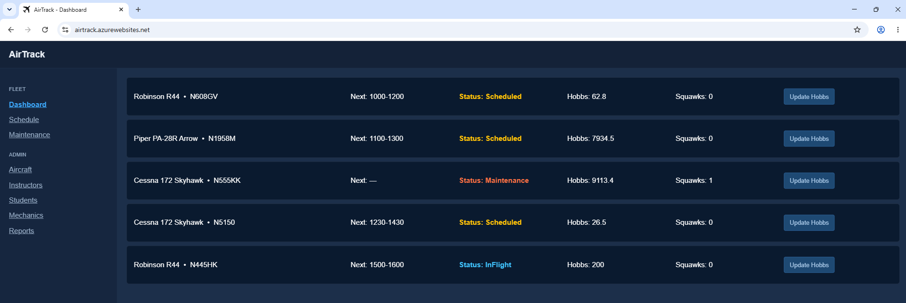
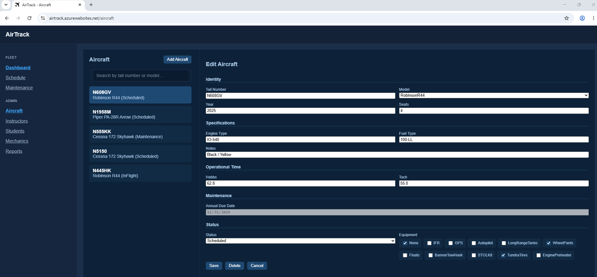
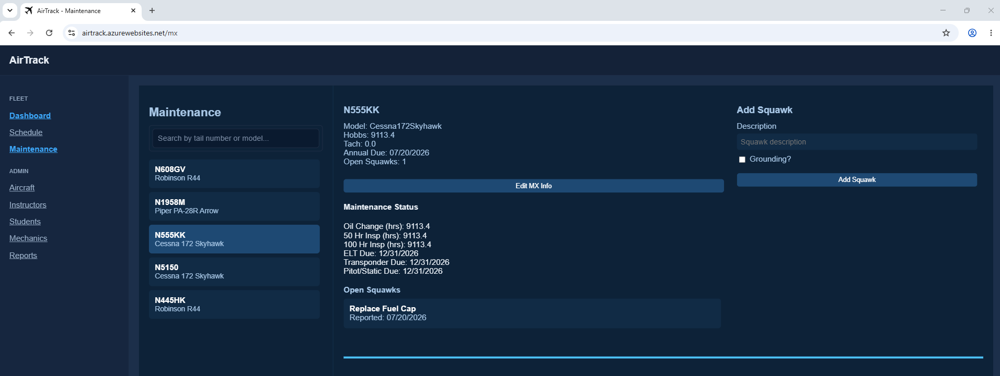
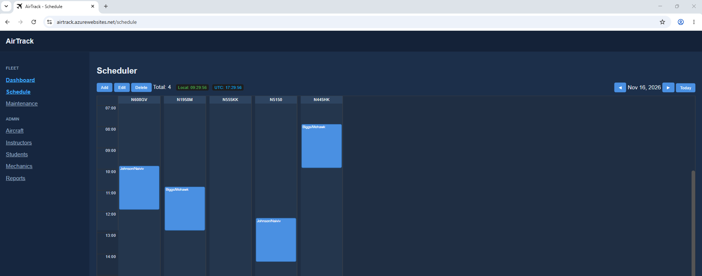
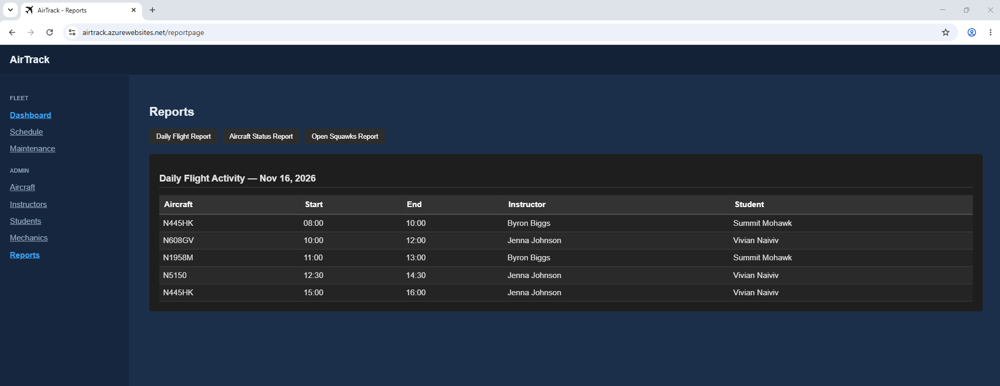
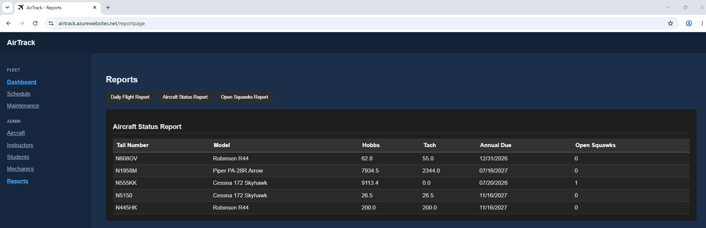
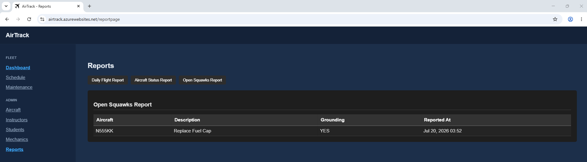

AirTrack is a flight operations platform built for small training organizations. It centralizes fleet management, maintenance tracking, personnel administration, dispatch visibility, and flight scheduling into a single real-time system built with .NET 8 and Blazor Server and deployed on Microsoft Azure.


AirTrack uses Entity Framework Core Table-Per-Type inheritance to model aircraft categories while maintaining a shared operational foundation.
Shared functionality exists within AircraftBase while individual aircraft types maintain specialized properties and behaviors.
Maintenance defects are tracked through a centralized squawk system that records issue details, grounding status, mechanic resolution notes, and return-to-service actions.
Aircraft operational status updates automatically from active maintenance records and scheduled flight activity.


The scheduler acts as the operational center of the system, connecting aircraft, instructors, students, and mechanics through a unified scheduling experience.
All event data is stored in UTC and displayed in Pacific Time, providing reliable scheduling across the application.



Review the source code or interact with the live Azure deployment to explore AirTrack's scheduling, fleet management, maintenance tracking, and operational workflows.